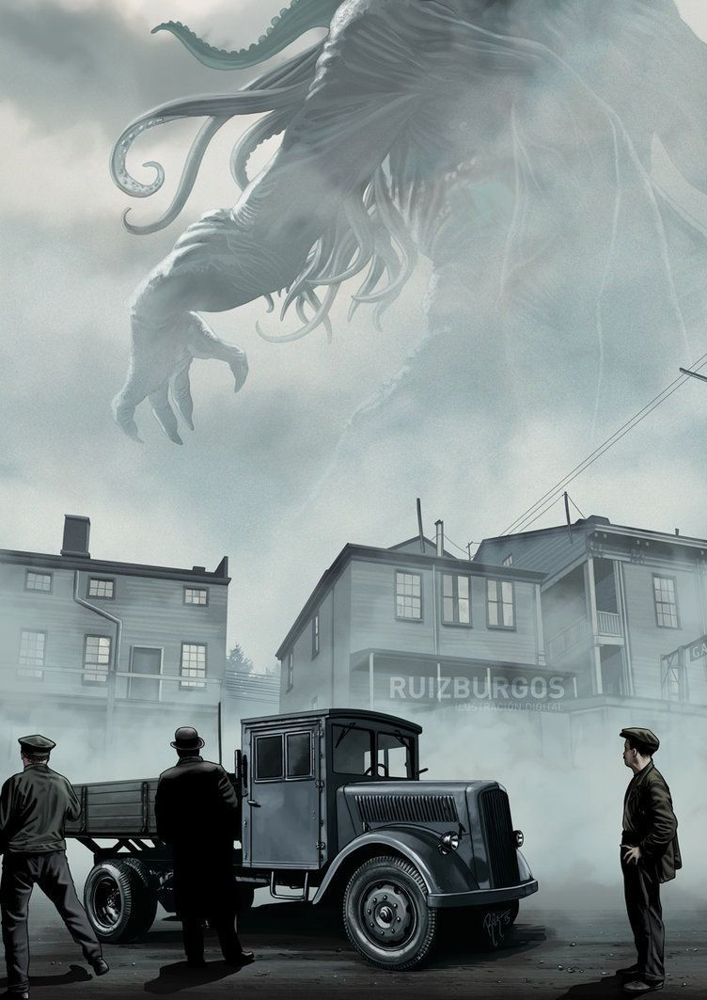
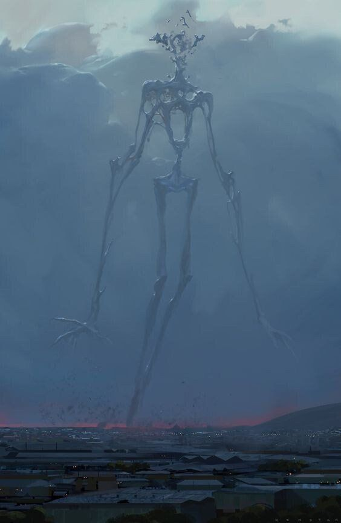
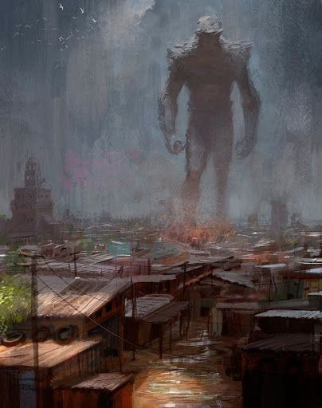
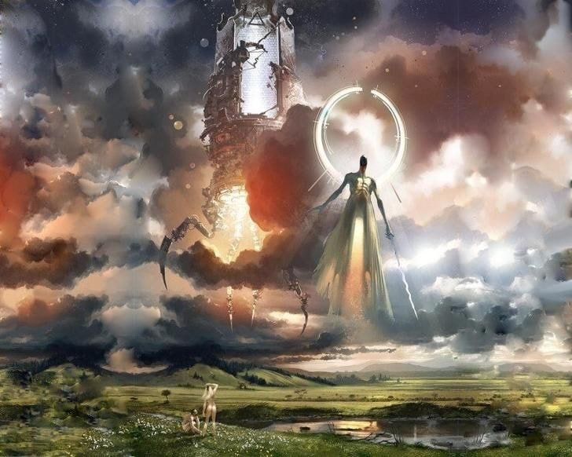
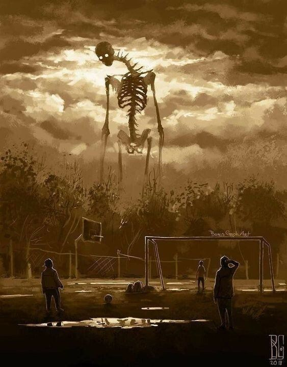
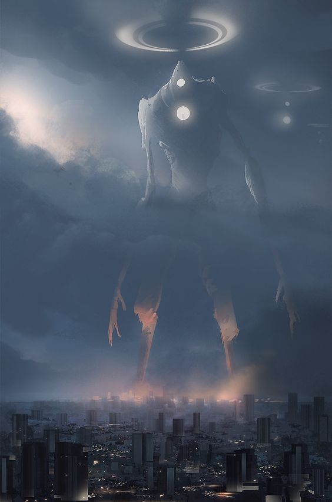
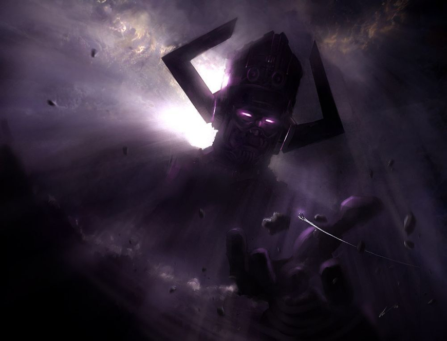
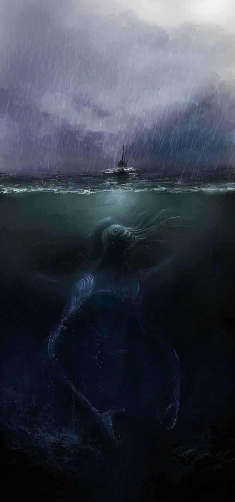

Cosmic Horror / 코스믹 호러 / 코즈믹 호러
인간이 감히 대적할 생각조차 해볼 수 없는 존재,
또는 우주 전체의 관점에서 인간을 바라봤을 때 인간이 얼마나 무가치한가에 대한 공포. 이 공포는 어떤 존재에 국한되는 것이 아니라 도저히 상상할 수 없을 만큼 거대한 것 ( 우주, 심해, 죽음, 시간 등)에 느껴지는 그 공포를 일컫기도 합니다.
(절대 인간이 대적할 수 없어야함)
절대 이길 수 없는 압도적인 존재에서 느껴지는 공포. 전 극호입니다.
후원댓글 9개
댓글 9개 ▼